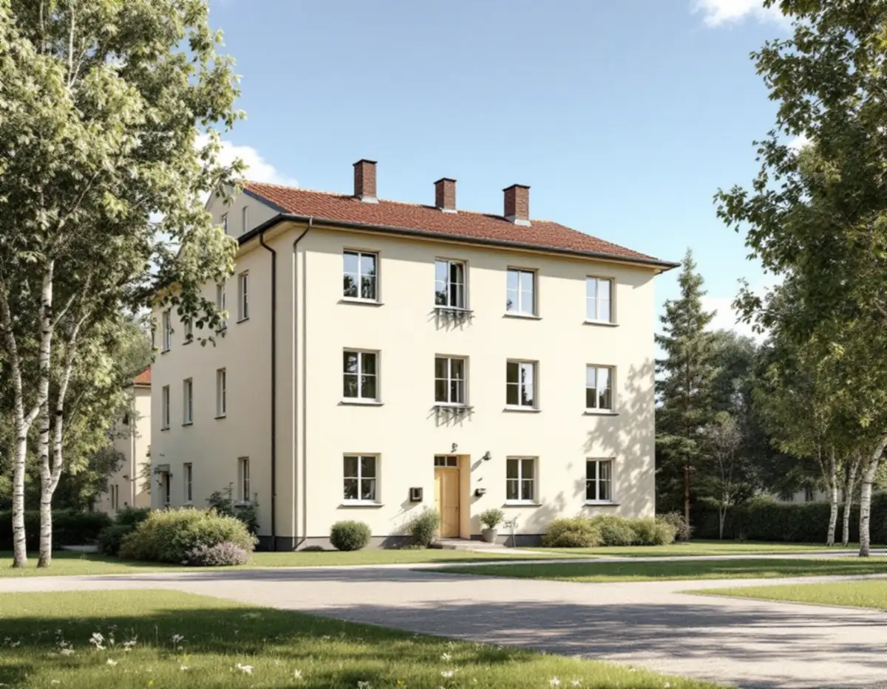
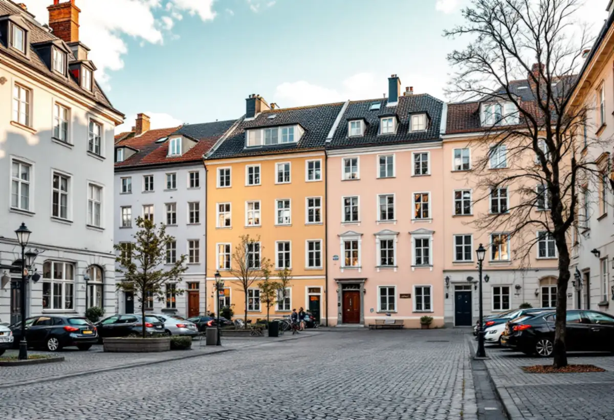

Platsbesök
Gratis besök där vi tittar på puts, färg och grannhusen.

Centrala Sundbyberg är en stad av putsade flerbostadshus i ljusa kulörer, och kommunens kulturmiljöutredning vill att nya hus anpassas till dem.
Beskriv jobbet kort.
Något blev fel. Kontrollera uppgifterna eller ring 08 12 410 276.
Vi tittar på jobbet på plats innan du får offert.
Du ser vad som ingår och vad det kostar.
Vi drar av ROT direkt och sköter ansökan.
Geal Entreprenad AB, Bromma. Org.nr 559303-7566.
Geal Entreprenad AB målar fasader på flerbostadshus och villor och tar fram kulörförslag och handlingar när bygglov behövs.
Den antikvariska utredningen för Sundbybergs bebyggelse, gjord av Stockholms läns museum 2016, beskriver stadskärnan norr om järnvägen som en kombination av slutna kvarter och friliggande lamellhus. Bebyggelsen hålls ihop av närliggande hushöjder, fasadmaterial och färgsättningar, och återkommande är slätputsade fasader i ljusa färgnyanser, ibland tegel, och fyra–fem våningar.
I riktlinjerna står att tillkommande hus ska anpassas till angränsande bebyggelse i arkitektur, material och färgsättning, och att det kännetecknande är putsarkitektur, ofta färgsatt i ljusa ockra- och terranyanser. Det säger också något om vad en ny kulör på ett befintligt hus bör förhålla sig till.

Utredningen pekar ut sammanhållen 1940-talsbebyggelse i öppna kvarter längs Vegagatan, Prästgårdsgatan, Fågelsången och delar av Järnvägsgatan. Norr om Tulegatan finns ett punkthusområde från 1940-talet anlagt enligt principen hus i park. Söder om järnvägen flankeras Sundbybergs torg av ett stenhuskvarter där byggnader från olika tider samspelar i höjd och genom putsade fasader i olika kulörer.
När ett av husen i en sådan grupp målas om är grannhusens kulörer en del av underlaget. Vi tar fram ett kulörförslag som visar huset tillsammans med sina grannar innan föreningen bestämmer sig.
Sundbybergs stad skriver att byte av kulör räknas som fasadändring. För flerbostadshus och andra byggnader som inte är en- eller tvåbostadshus krävs bygglov när ändringen görs på en fasad som vetter mot allmän plats. För en- och tvåbostadshus krävs inte längre bygglov, förutsatt att huset inte är kulturhistoriskt värdefullt eller ligger i ett särskilt värdefullt område som Duvbo.
I Duvbo och för kulturhistoriskt värdefulla byggnader är lovplikten utökad, och där krävs det för det mesta bygglov för fasadändringar. Även när lov inte krävs kan man söka ett frivilligt bygglov för att få beslut på att åtgärden följer lagen. Enligt staden kostar det lika mycket som ett vanligt bygglov.
Bland de handlingar staden oftast kräver för ett bygglov för fasadändring finns en situationsplan, plan- och fasadritning, en kulör- och materialbeskrivning och en kontrollplan. Ritningarna ska vara fackmannamässigt utförda och skalenliga, och ansökan görs i kommunens e-tjänst.
Vi tar fram kulör- och materialbeskrivningen med kulörkoder och färgtyp för fasad, listverk och fönsteromfattningar. Är huset en villa ger målningen rotavdrag på arbetskostnaden, och för föreningshus ställs kostnadsförslaget till föreningen.
Den antikvariska utredningen beskriver Hallonbergen som ett enhetligt, storskaligt bostadsområde från rekordåren. Stadsplanen antogs 1968 och området stod klart 1973. Fasaderna är komponerade av ljus kalksandsten omväxlande med gjutna betongelement, och förnyelsen på 1990-talet gav en del hus nya exteriörer med påbyggda sadeltak och utstickande balkonger.
Rissne fick sin stadsplan 1980, och 1982 flyttade de första hyresgästerna in. Fasader av kalksandsten och betong är inte självklart något som ska målas, så vi bedömer varje hus för sig innan vi föreslår målning.
Gratis besök där vi tittar på puts, färg och grannhusen.
Fasad mot gata, värdefulla hus och Duvbo.
Kulör- och materialbeskrivning för huset.
Ritningar och handlingar när bygglov krävs.
Rengöring, lagning och grundning.
Fasad, listverk och detaljer.
Målning av fasaden på ett småhus som du äger och bor i ger rotavdrag på arbetskostnaden, högst 30 procent och högst 50 000 kronor per person och år. Material och resor ger inget avdrag, och Geal drar avdraget direkt på fakturan.
I en bostadsrätt ges rotavdrag bara för arbete inne i bostaden. Fasaden är en gemensam del, så målningen av ett föreningshus betalas av föreningen utan avdrag.
Fasadernas yta och höjd, putsens skick, antalet detaljer och kulörer, ställning och om bygglov med kulör- och materialbeskrivning behövs. Efter ett gratis platsbesök får du ett skriftligt kostnadsförslag.
Fasad, fönster och invändig målning.
Målare i Stockholm →Takbyte, takbesiktning och plåtarbeten.
Takläggare i Sundbyberg →Rött lertegel och synliga taktassar i Duvbo.
Takrenovering i Sundbyberg →Duvbo, potten och medgivandena.
Attefallshus i Sundbyberg →Ventilationen, OVK och Duvbo.
Badrumsrenovering i Sundbyberg →Nytt hus, träd och regler i Duvbo.
Byggföretag i Sundbyberg →Panel och puts på Duvbos villor.
Fasadrenovering i Sundbyberg →Duvbo, flerbostadshusen och lovet.
Fönsterbyte i Sundbyberg →Egnahemsvillornas fönster i Duvbo.
Fönsterrenovering i Sundbyberg →Trägolv i äldre villor och nya golv.
Golvläggare i Sundbyberg →Ta bort färg och fernissa från gamla golv.
Golvslipning i Sundbyberg →Duvbos villor och stadens lägenhetskök.
Köksrenovering i Sundbyberg →Lamellhus, kulörbyte och bostadsrätt.
Målare i Sundbyberg →Duvbos tak, rännor och lov.
Plåtslagare i Sundbyberg →Altan, pergola och staket enligt stadens guide.
Snickare i Sundbyberg →Container, ställning och grannar.
Takbyte i Sundbyberg →Ny tapet i äldre lägenheter.
Tapetsering i Sundbyberg →Duvbo, träden och riktlinjerna.
Tillbyggnad i Sundbyberg →Duvbos villor, kaminer och etablering.
Totalrenovering i Sundbyberg →Eller ring 08 12 410 276, mån–fre 08–17.
Beskriv jobbet kort.
Något blev fel. Kontrollera uppgifterna eller ring 08 12 410 276.